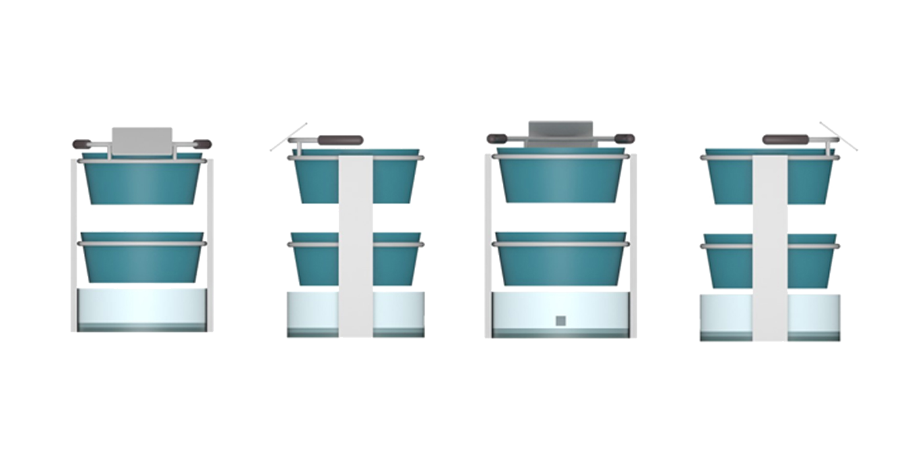

Scerf, the smart shopping cart.
This is the introduction!
The method introduced in this paper aims at helping deep learning practitioners faced with an overfit problem. The idea is to replace, in a multi-branch network, the standard summation of parallel branches with a stochastic affine combination. Applied to 3-branch residual networks, shake-shake regularization improves on the best single shot published results on CIFAR-10 and CIFAR-100 by reaching test errors of 2.86% and 15.85%. Experiments on architectures without skip connections or Batch Normalization show encouraging results and open the door to a large set of
This is the meaning!
The method introduced in this paper aims at helping deep learning practitioners faced with an overfit problem. The idea is to replace, in a multi-branch network, the standard summation of parallel branches with a stochastic affine combination. Applied to 3-branch residual networks, shake-shake regularization improves on the best single shot published results on CIFAR-10 and CIFAR-100 by reaching test errors of 2.86% and 15.85%. Experiments on architectures without skip connections or Batch Normalization show encouraging results and open the door to a large set of
This is my role!
The method introduced in this paper aims at helping deep learning practitioners faced with an overfit problem. The idea is to replace, in a multi-branch network, the standard summation of parallel branches with a stochastic affine combination. Applied to 3-branch residual networks, shake-shake regularization improves on the best single shot published results on CIFAR-10 and CIFAR-100 by reaching test errors of 2.86% and 15.85%. Experiments on architectures without skip connections or Batch Normalization show encouraging results and open the door to a large set of